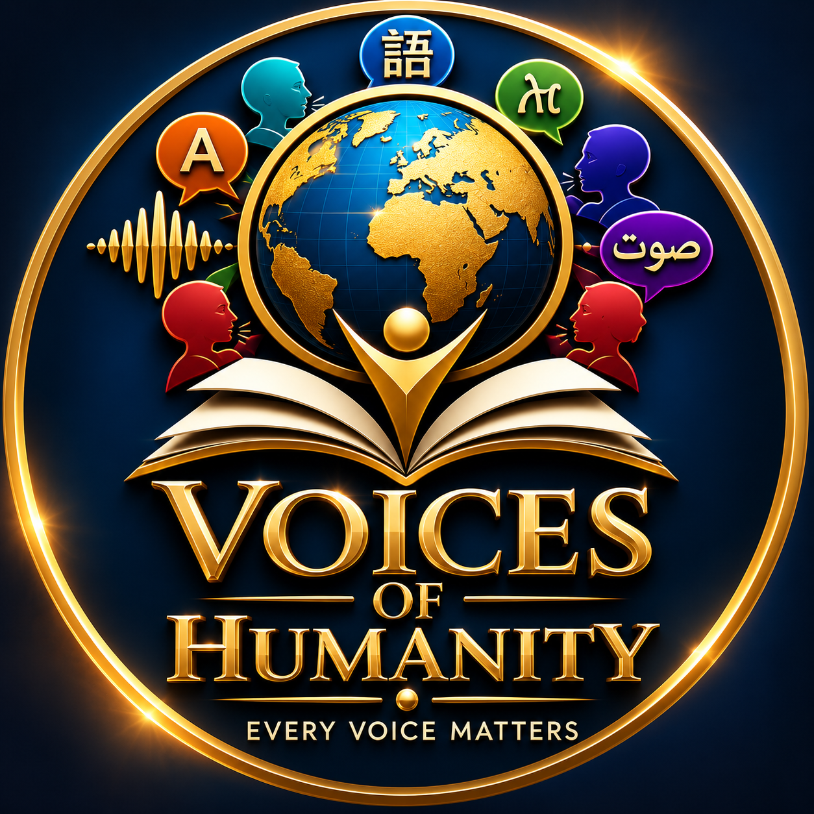
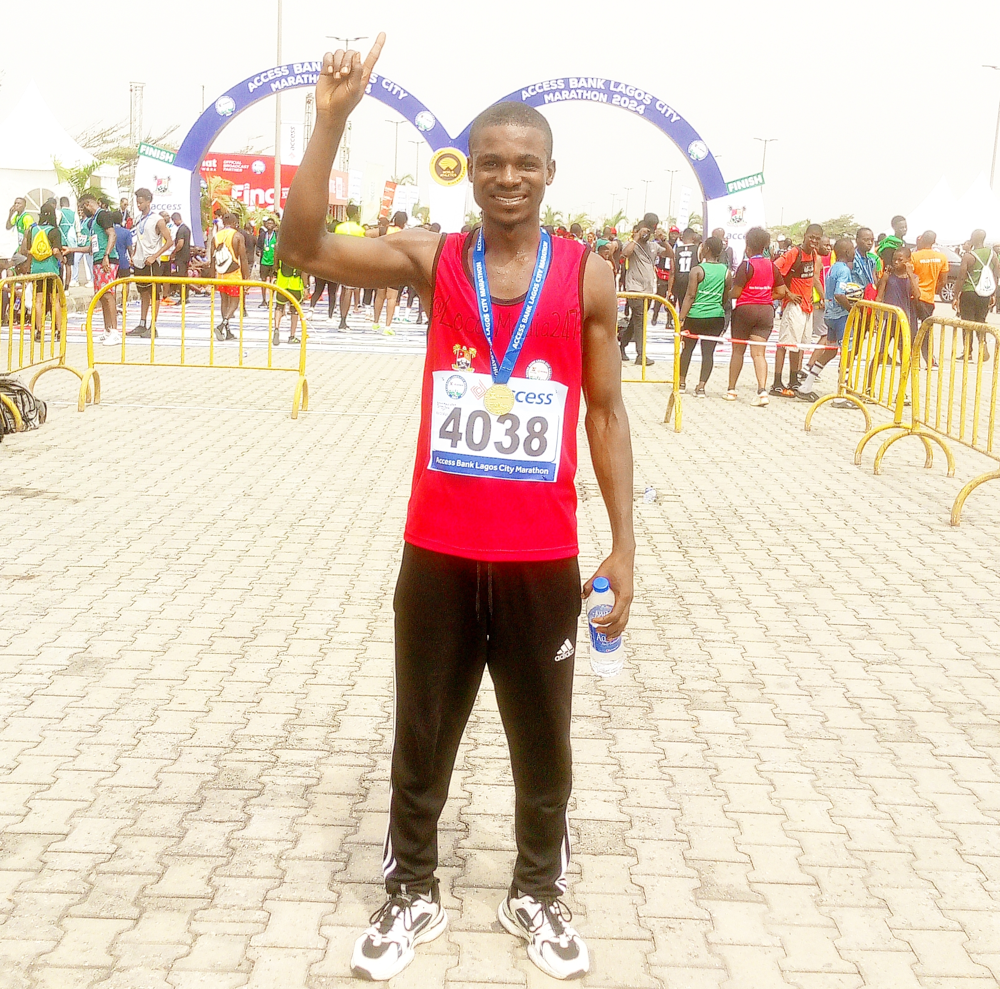

Document. Preserve. Share.
To document and celebrate languages, cultures, oral histories and human experiences through research, documentary filmmaking, education and digital preservation.

VOICES OF HUMANITYOUR STORY • OUR PURPOSE • OUR PEOPLE
Voices of Humanity is an independent documentary project dedicated to documenting languages, preserving cultural knowledge and sharing the human stories that deserve to be remembered.
A PROJECT BUILT ON A SIMPLE CONVICTION
Voices of Humanity began on 16 May 2026 with a conviction that the languages and cultures of every community deserve careful attention, respectful documentation and a place in the historical record.
The journey grew from a wider curiosity about the natural world, human societies and the knowledge carried across generations. Documentary storytelling opened a path into a deeper subject: language — one of humanity’s most powerful vessels of memory, identity and knowledge.
What began as an independent documentary effort is developing into a digital home for language documentaries, learning resources, research, cultural records and stories from communities whose voices deserve to be heard.
To document and celebrate languages, cultures, oral histories and human experiences through research, documentary filmmaking, education and digital preservation.
To help build an enduring and accessible record of humanity’s linguistic and cultural diversity, so that knowledge and stories can be encountered by generations to come.
FROM DOCUMENTATION TO DIGITAL PRESERVATION
Research-led films that introduce languages, communities, histories and cultural knowledge with care and context.
Educational resources and language lessons that help learners encounter words, pronunciation and everyday expressions.
Independent research and community-informed documentation, with verification and informed consent as essential standards.
A growing online museum bringing together documentaries, reflections, learning materials and cultural records.
Storytelling that honours memory, lived experience, traditional knowledge and the human imagination.
Making research and cultural knowledge more accessible to students, educators, researchers and the wider public.

MEET THE FOUNDER
Independent Documentary Researcher and Producer
Francis Erenje is the founder of Voices of Humanity and the founder of LocalMedia247, an independent media initiative established in December 2021. His work brings together documentary production, research, educational storytelling and digital media.
With an academic background in Chemistry from Benue State University, completed in 2014, he approaches documentary work with an interest in evidence, careful inquiry and clear communication. His experience in media has also involved developing and supervising editorial work with an emphasis on verification and fact-checking.
His commitment to language preservation is grounded in the belief that a language is more than a means of communication. It carries a community’s memory, worldview, knowledge and identity. Through Voices of Humanity, he is building an independent body of documentary and educational work that can contribute to the preservation of that inheritance.
“Our credibility is built one carefully verified fact at a time.”
OUR GUIDING PRINCIPLES
Accuracy before speed. Claims are checked and uncertainty is acknowledged.
Respect for communities. People and cultures are represented with dignity and context.
Informed participation. Community access, consent and the appropriate use of knowledge matter.
Research before publication. Evidence guides the story; assumptions do not replace verification.
Preservation with purpose. Materials should serve learning, memory and future generations.
Every voice matters. No community’s contribution should be dismissed because it is small or less widely known.
We distinguish completed work from ongoing research and future plans. We do not present proposed partnerships, community access or funding as secured until they are confirmed.
A GROWING DOCUMENTARY RECORD
The project’s first thirty language documentary episodes represent an initial body of work focused on Nigerian languages and communities. The collection continues to develop through further research, educational materials and planned fieldwork.
Explore the documentary archive ↗The figure above refers to the documentary episode count, not the number of languages in the world or the total number of communities documented.
THE NEXT CHAPTER IS A SHARED EFFORT
We welcome thoughtful conversations with language communities, native speakers, researchers, universities, cultural institutions, educators, documentary professionals and potential supporters.
voicesofhumanity.world • francis.erenje@voicesofhumanity.world